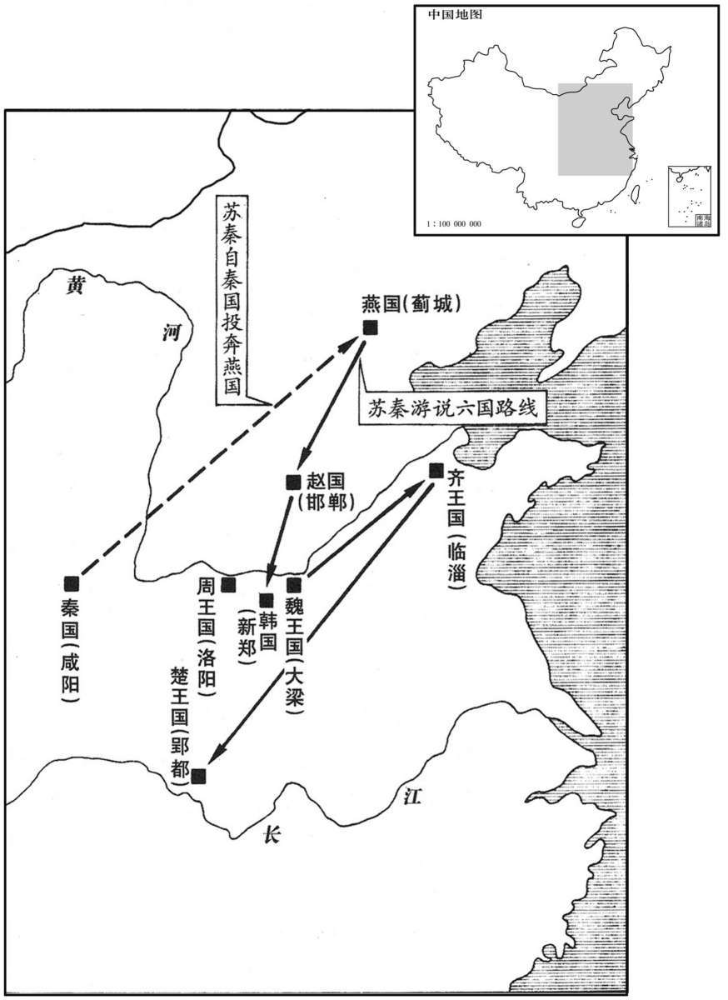

公元前333年资治通鉴：本年记事、原文与白话对照
按原书编年位置阅读；追叙和史论不等于本年发生的事件。白话采用所据译本，缺译不以生成译文补齐。
卷2 · 本年记事
公元前333年 · 显王在位第36年
三十六年〔（戊子、前三三三）〕
本年事件索引（现代整理）

本年形势与背景参考图
楚王伐齐，围徐州。〔徐，音舒。〕
楚王攻打齐国，围困徐州。
韩高门成。昭侯薨，〔卒如屈宜臼言。卒，子恤翻。〕子宣惠王立。〔宣惠，复谥也。〕
韩国的高大门楼修成。韩昭侯却死了，其子即位为韩宣惠王。
初，洛阳人苏秦说秦王以兼天下之术，〔说，式芮翻。姓谱：苏，己姓，颛顼裔孙吴回生陆终，陆终生昆吾，封于苏，至周，苏公。〕秦王不用其言。苏秦乃去，说燕文公曰：“燕之所以不犯寇被甲兵者，以赵之为蔽其南也。〔燕，因肩翻。被，皮义翻。〕且秦之攻燕也，战于千里之外；赵之攻燕也，战于百里之。〔内燕南与赵接境；战于百里之内，言其近也。秦欲攻燕，自蒲、潼下兵，则为赵所隔，故必迳上郡之西，出云中、九原然后至燕，故云战于千里之外。〕夫不忧百里之患而重千里之外，计无过于此者。〔夫，音扶。计无过于此者，言燕计之过，无甚于此。〕愿大王与赵从亲，〔从，子容翻。〕天下为一，则燕国必无患矣。”〔此苏秦为燕至计，先定于胸中者。〕
当初，洛阳人苏秦向秦王进献兼并天下的计划，秦王却不采纳，苏秦于是离去，又游说燕文公道：“燕国之所以不遭受侵犯和掠夺，是因为南面有赵国做挡箭牌。秦国要想攻打燕国，必须远涉千里之外，而赵国要攻打燕国，只需行军百里以内。现在您不担忧眼前的灾患，反倒顾虑千里之外，办事情没有比这更错的了。我希望大王您能与赵国结为亲密友邦，两国一体，则燕国可以无忧无虑了。”
本段人物：苏秦
文公从之，资苏秦车马，以说赵肃侯曰：“当今之时，山东之建国莫强于赵，〔说，式芮翻。建国，犹言立国也。〕秦之所害亦莫如赵。然而秦不敢举兵伐赵者，畏韩、魏之议其后也。秦之攻韩、魏也，无有名山大川之限，稍蚕食之，傅国都而止。〔傅，读曰附，傅着之傅。〕韩、魏不能支秦，必入臣于秦；秦无韩、魏之规则祸中于赵矣。〔中，竹仲翻。〕臣以天下地〔【章：十二行本“地”作“之”；乙十一行本同；孔本同；张校同。】〕图案之，诸侯之地五倍于秦，料度诸侯之卒十倍于秦。〔料，音聊，又如字。度，徒洛翻。〕六国为一，并力西乡而攻秦，〔乡，读曰向。〕秦必破矣。夫衡人者皆欲割诸侯之地以与秦，〔衡，读曰横。衡人，说客之连横者。〕秦成则其身富荣，国被秦患而不与其忧，〔与，读曰预。〕是以衡人日夜务以秦权恐愒诸侯，以求割地。〔索隐曰：恐，起拱翻。愒，许曷翻，又呼曷翻，谓相恐胁也。邹氏愒音憩，义疏。〕故愿大王熟计之也！窃为大王计，莫如一韩、魏、齐、楚、燕、赵为从亲以畔秦，〔从，子容翻。畔，反也，及秦之所为也。秦之所为者衡也。〕令天下之将相会于洹水之上，〔令，卢经翻，使也。将，即亮翻。相，息亮翻。徐广曰：洹水出汲郡林虑县。水经：洹水出上党泫氏县东北，出山迳邺县南，又东过内黄县北，入于白沟。洹，音桓，又于元翻。虑，音庐。〕通质结盟，〔质，音致。〕约曰：『秦攻一国，五国各出锐师，或桡秦，〔服虔曰：桡，弱也，音奴教翻，又音乃卯翻。〕或救之。有不如约者，五国共伐之！』诸侯从亲以摈秦，秦甲必不敢出于函谷以害山东矣。”〔从，子容翻。摈，必刃翻。班志，弘农郡弘农县有秦函谷关；汉武帝从杨仆之请，移关于新安县。文颖曰：秦关在弘农县衡岭，后移在河南谷成县。师古曰：今桃林县有洪溜涧水，即古所谓函谷，其水北流入河，夹河之岸尚有旧关余迹焉。谷成，即新安。杜佑曰：汉函谷关在汉新安县东北一里，其秦关在今灵宝县。〕肃侯大说，〔索隐曰：肃侯，名语。谥法：刚德克就曰肃；执心决断曰肃。说，与悦同。〕厚待苏秦。尊宠赐赉之，以约于诸侯。
燕文公听从苏秦的劝告，资助他车马，让他去游说赵肃侯。苏秦对赵肃侯说道：“当今之时，崤山以东的国家以赵国最强，秦国的心腹之患也是赵国，然而秦国始终不敢起兵攻赵，就是怕韩国、魏国在背后算计。秦国要是攻打韩、魏两国，没有名山大川阻挡，只要吞并一些土地，很快就兵临国都。韩国、魏国不能抵挡秦国，必定会俯首称臣；秦国没有韩国、魏国的牵制，就立即把战祸蔓延到赵国头上。让我根据天下的地图来分析一下，各国的土地面积是秦国的五倍，估计各国的兵力是秦国的十倍，如果六国结成一气，向西进攻秦国，一定可以攻破。现在主张结好秦国的人都想割各国的土地去献给秦国，秦国成就霸业他们可以获得个人荣华富贵，而各国遭受秦国的践踏，他们却毫无分忧之感。所以这些人日日夜夜总是用秦国的威势来恐吓各国，以使各国割地。我劝大王好好地想一想！为大王着想，不如联合韩、魏、齐、楚、燕、赵各国为友邦，抵抗秦国，让各国派出大将、国相在洹水举行会议，互换人质，结成同盟，共同宣誓：‘如果秦国攻打某一国，其他五国都要派出精兵，或者进行牵制，或者进行救援。哪一国不遵守盟约，其他五国就一起讨伐它！’各国结成盟邦来对抗秦国，秦国就再也不敢派兵出函谷关来侵害崤山以东各国了。”赵肃侯听罢大喜，将苏秦奉为上宾，赏赐丰厚，让他去约会各国。
本段人物：苏秦
会秦使犀首伐魏，大败其师四万余人，禽将龙贾，取雕阴，〔犀首，魏官名。公孙衍为此官，因号犀首，犹虎牙将军之称。龙姓出于龙伯氏，或云出于御龙氏。班志，上郡有雕阴道。括地志：雕阴故城，在鄜州洛交县北二十里。败，补迈翻。称，尺证翻。〕且欲东兵。〔言引兵东下也。〕苏秦恐秦兵至赵而败从约，〔从，子容翻。〕念莫可使用于秦者，乃激怒张仪，入之于秦。
这时秦国派犀首为大将攻打魏国，大败四万多魏军，活捉魏将龙贾，攻取雕阴，又要引兵东下。苏秦担心秦兵到赵国会挫败联合各国的计划，盘算没有别人可以到秦国去用计，于是用激将法挑动张仪，前往秦国。
张仪者，魏人，与苏秦俱事鬼谷先生，〔盖居于鬼谷，因以称之。隋志，冯翊郡韩城县有鬼谷。风俗通义曰：鬼谷先生，六国时纵横家。索隐曰：扶风池阳、颖川阳城并有鬼谷，盖是其人所居，因以为号。又乐壹注鬼谷子书云：苏秦欲神秘其道，故假名鬼谷。〕学纵横之术，〔纵，与从同，音子容翻。〕苏秦自以为不及也。仪游诸侯无所遇，困于楚，苏秦故召而辱之。仪恐，〔“恐”，史记作“怒”、〕念诸侯独秦能苦赵，遂入秦。苏秦阴遣其舍人赍金币资仪，〔文颖曰：舍人，主内小吏官名也。师古曰：舍人，亲近左右之通称也；后遂为司属官号。赍，则兮翻。〕仪得见秦王。秦王说之，〔说，读曰悦。〕以为客卿。〔秦有客卿之官，以待自诸侯来者，其位为卿而以客礼待之也。〕舍人辞去，曰：“苏君忧秦伐赵败从约，〔败，补迈翻。从，子容翻。〕以为非君莫能得秦柄；故激怒君，使臣阴奉给君资，尽苏君之计谋也。”张仪曰：“嗟乎，此吾在术中而不悟，吾不及苏君明矣。为吾谢苏君，苏君之时，仪何敢言！”〔为吾之为，于伪翻。为后苏秦死，仪方出说六国张本。说，式芮翻。〕
张仪，魏国人，当年与苏秦一起在鬼谷先生门下，学习联合、分裂各国的崐政治权术，苏秦自认为才能不及张仪。张仪游说各国没有被赏识，流落楚国，这时苏秦便召他前来，又加以羞辱。张仪被激怒，心想各国中只有秦国能让赵国吃苦头，便前往秦国。苏秦又暗中派门下小官送钱去资助张仪，使张仪见到了秦王。秦王很高兴，以客卿地位礼待张仪。苏秦派来的人告辞时对张仪说明：“苏秦先生担心秦国攻打赵国会挫败联合各国计划，认为除了您没有人能操纵秦国，所以故意激怒您，又暗中派我来供给您费用，这些都是苏秦先生的计谋啊！”张仪感慨地说：“罢了！我在别人的计谋中还不自知，我不如苏秦先生是很明显的事了。请代我拜谢苏秦先生，只要他活着，我张仪就不说二话！”
于是苏秦说韩宣惠王曰：“韩地方九百余里，带甲数十万，天下之强弓、劲弩、利剑皆从韩出。韩卒超足而射，百发不暇止。以韩卒之勇，被坚甲，跖劲弩，〔被，皮义翻。跖，之石翻，踏也。史记正义曰：欲放弩者皆坐，举足踏弩材，手引凑机，然后发之。〕带利剑，一人当百，不足言也。大王事秦，秦必求宜阳、成皋；〔韩之宜阳，西接境于秦，当函谷出兵之路。成皋，春秋郑之制邑，亦曰虎牢，战国时为郑之屏蔽，皆韩之地。班志，宜阳属弘农郡，成皋属河南郡。〕今兹效之，明年复求割地。〔复，扶又翻。〕与则无地以给之；不与则弃前功，受后祸。且大王之地有尽而秦求无已，以有尽之地逆无已之求，此所谓市怨结祸者也。〔市，买也。凡以物买卖贸易曰市。〕不战而地已削矣。鄙谚曰：『宁为鸡口，无为牛后。』〔谚，鱼变翻，俗言也。史记正义曰：鸡口虽小，犹进食；牛后虽大，乃出粪。尔雅翼曰：苏秦说韩王，“宁为鸡尸，无为牛从。”尸，主也；一群之主，所以将众也。从，从物者也，谓牛子也；随群而往，制不在我者也。言宁为鸡中之主，不为牛子之从后也。此本诸延笃注战国策。〕夫以大王之贤，挟强韩之兵，而有牛后之名，臣窃为大王羞之！”〔夫，音扶。挟，户颊翻。为，于伪翻。〕韩王从其言。
于是苏秦又劝说韩宣惠王：“韩国方圆九百多里，有几十万甲士，天下的强弓、劲弩、利剑都产于韩国。韩国士兵双脚踏弩射箭，能连续百发以上。用这样勇猛的士兵，披上坚固的盔甲，张起强劲的弓弩，手持锋利宝剑，一个顶百个也不在话下。大王若是屈服秦国，秦国必定索要宜阳、成皋两城，现在满足了它，明年还会要割别的地。再给它已无地可给，不给又白费了以前的讨好，要蒙受后祸。况且大王的地有限而秦国的贪欲无止，以有限的地来迎合无穷的贪求，这正是自找苦吃，没打一仗就丢了土地。俗话说得好：‘宁为鸡口，无为牛后。’大王您这样贤明，拥有韩国的强兵，而落个尾从的名声，那时我也背地里要为您害羞了！”韩王听从了苏秦的劝说。
本段人物：苏秦
苏秦说魏王曰：“大王之地方千里，地名虽小，然而田舍庐庑之数，〔庑，文甫翻。数，七欲翻，密也。〕曾无所刍牧。〔曾，才登翻。刍，刈草也。牧，放牧也。言魏民居蕃庶，无刈刍放牧之地也。〕人民之众，车马之多，日夜行不绝，輷輷殷殷，若有三军之众。〔輷，呼宏翻。殷，音隐。〕臣窃量大王之国不下楚。〔量，吕张翻，量度也。〕今窃闻大王之卒，武士二十万，苍头二十万，奋击二十万，厮徒十万；〔武士，武卒也。详见后第六卷秦昭襄王五十二年。苍头，谓着青帽；项羽传有“异军苍头特起”。奋击，简军中之勇士敢奋力而击敌者异之。苏林曰：取薪之卒曰厮，音斯。〕车六百乘，骑五千匹；〔古者用车战，战国始用骑兵，车骑异用而并用矣。乘，绳证翻。骑，奇寄翻。〕乃听于群臣之说，而欲臣事秦！〔【章：乙十一行本“秦”下有“愿大王熟察之”六字；孔本同；张校同；退斋校同；百衲本缺叶。】〕故敝邑赵王使臣效愚计，奉明约，在大王之诏诏之。”魏王听之。
苏秦又对魏王说：“大王的领地方圆千里，表面上虽不算大，然而村镇房屋的稠密，已到了无处可放牧的地步。百姓、车马之多，日夜络绎不绝于道路，熙熙攘攘，好似千军万马。我私下估计，大王的国家不亚于楚国。现在听说大王有二十万武士、二十万苍头军、二十万敢死队、十万仆从、六百辆战车、五千匹战马，却打算听从群臣的浅见，去屈服秦国。所以我们赵王派我向您建议，订立盟约，望大王明察决断。”魏王也同意了苏秦的建议。
苏秦说齐王曰：“齐四塞之国，地方二千余里，带甲数十万，粟如丘山。三军之良，五家之兵，〔三军，谓三晋之军。高诱曰：五家，即五国。〕进如锋矢，战如雷霆，解如风雨，即有军役，未尝倍泰山、绝清河、涉渤海者也。〔倍，与背同，音蒲妹翻，乡倍之倍也。班志：泰山在泰山郡博县东北。水经：淇水自馆陶清渊东北过广宗县东，为清河，汉因置清河郡；清河又东过修县，与大河张甲故渎合，又东过东光、南皮等县，齐之北界也。又齐东、北皆阻海，汉渤海郡亦其境也。师古曰：郡在渤海之滨，因以为名。直度曰绝；由膝以上曰涉。〕临淄之中七万户，臣窃度之，不下户三男子，不待发于远县，而临淄之卒固已二十一万矣。临淄甚富而实，其民无不斗鸡、走狗、六博、阘鞠。〔说文曰：六博，局戏也。六箸十二棋，乌胄所作。楚辞：箟蔽象棋有六博。鲍宏博经曰：琨蔽，玉箸也。各投六箸，行六棋，故曰六博。用十二棋，六棋白，六棋黑。所掷头谓之琼，琼有五采，刻为一画者谓之塞，刻为两画者谓之白，刻为三画者谓之黑，一边不刻者，五塞之间，谓之五塞。“阘鞠”，史记作“蹋鞠”，以皮为之，实之以毛，蹴蹋而戏。刘向曰：蹴鞠起于战国之时，所以练武士，因嬉戏而讲习之；或言黄帝所作。阘，徒腊翻。〕临淄之涂，车毂击，人肩摩，连衽成帷，挥汗成雨。夫韩、魏之所以重畏秦者，为；与秦接境壤也。〔夫，音扶。为，于伪翻。〕兵出而相当，不十日而战，胜存亡之机决矣。〔“而战”句断。“胜”下当有“负”字。以此观之，文意明通。窃谓通鉴承史记元文之误。〕韩、魏战而胜秦，则兵半折，〔折，常列翻，摧折也。〕四境不守；战而不胜，则国已危亡随其后；是故韩、魏之所以重与秦战而轻为之臣也。今秦之攻齐则不然，倍韩、魏之地，过卫阳晋之道，经乎亢父之险，车不得方轨，骑不得比行，〔水经注：瓠子河出东郡濮阳县北河，南至济阴句阳县为新沟，又东过廪丘县与濮水俱东。瓠河又迳阳晋城南，苏秦所谓“卫阳晋之道”也。史记正义曰：阳晋故城在曹州乘氏县西北三十七里。班志，亢父县属东平国。又括地志：亢父故城，在兖州任城县南五十一里。亢，音抗，又音刚。，父音甫。说文：轨，车辙也。颜师古曰：车并行为方轨。骑，奇寄翻。比，毗义翻，次也。行，户刚翻，列也；凡行列之行皆同音。车并读曰并。〕百秦人守险，千人不敢过也。秦虽欲深入则狼顾，恐韩、魏之议其后也，〔尔雅翼：狼猛而敏给，能自顾其后；盖狼行而屡顾，恐人掎其后故也。掎，居绮翻。〕是故恫疑、虚喝、骄矜而不敢进，〔恫，他红翻，恐惧貌。高诱曰：虚喝，喘息惧貌。刘氏曰：秦自疑惧，虚作恐猲之辞以胁韩、魏也。史记正义曰：言秦虽至亢父，犹恐惧狼顾，虚作喝骂，骄溢矜夸而不敢进伐齐。喝，呼葛翻；亦作猲，音同。〕则秦之不能害齐亦明矣，夫不深料秦之无柰齐何，而欲西面而事之，是群臣之计过也。〔夫，音扶。〕今无臣事秦之名而有强国之实，臣是故愿大王少留意计之！”齐王许之。〔少，始绍翻。〕
苏秦再游说齐王说：“齐国四面要塞，广袤二千余里，披甲士兵几十万，谷积如山。精良的三军，郊外二十县的五都之兵，进攻像离弦利箭，作战如雷霆万钧，解散似风雨扫过。有了他们，即使遇到战事，也不用到泰山、清河、渤海一带去征兵。临淄城里有七万户，以我的猜度，每户男子不下三人，不用到边远县乡去征发，仅临淄城里的人已够二十一万兵了。临淄城富庶殷实，居民都斗鸡、赛狗、下棋、踢球。临淄的道路上，车多得互相碰撞，人多得摩肩接踵，衣服连起来成了帷帐，众人挥汗如同下雨。那韩国、魏国之所以十分害崐怕秦国，是因为与秦国接壤，出兵对阵，作战用不了十天，就到了存亡的生死关头。韩国、魏国如果打败了秦国，自身也损伤过半，边境难守；如果败给秦国，那么紧接着国家就濒临危亡。所以韩国、魏国对与秦国作战十分慎重，常常表示屈服忍让。而秦国来攻齐国就不一样了，要背靠韩国、魏国的国土，经过卫国阳晋之路，再经过亢父的险隘，车辆、骑兵都难以并行。只要有一百人守住险要，一千人也不敢通过。秦国即使想驱兵深入，也要顾忌韩、魏两国在它背后的活动，所以它虽骄横，却又疑心重重，虚张声势而不敢冒进攻齐，以此而见，秦国难以危害齐国是明显的。而你们不仔细考虑秦国对齐国的无可奈何，却要向西俯首称臣，这是齐国群臣的失策。现在听我的建议，齐国可以免去屈服于秦国的卑名，而获得强国的实际利益，因此我希望大王您能留意划算一下！”齐王也应允了苏秦的建议。
本段人物：苏秦
乃西南说楚威王曰：“楚，天下之强国也，地方六千余里，带甲百万，车千乘，骑万匹，〔楚在齐之西南，故苏秦自齐而西南诣楚。说，式芮翻。乘，绳证翻。骑，奇寄翻。〕粟支十年，此霸王之资也。秦之所害莫如楚，楚强则秦弱，秦强则楚弱，其势不两立。故为大王计，莫如从亲以孤秦。〔从，子容翻。〕臣请令山东之国〔令，卢经翻，使也。〕奉四时之献，以承大王之明诏；委社稷，奉宗庙，练士厉兵，在大王之所用之。故从亲则诸侯割地以事楚，衡合则楚割地以事秦，〔从，子容翻。衡，读曰横。〕此两策者相去远矣，大王何居焉？”楚王亦许之。
最后，苏秦又到西南劝说楚威王道：“楚国，是天下的强国，有方圆六千余里，百万甲士，千辆战车，万匹战马，存粮可支持十年，这是称霸天下的资本。秦国的心腹之患莫过于楚国，楚国强则秦国弱，秦国强则楚国弱，两国势不两立。所以我为大王着想，不如联合各国孤立秦国。我可以让崤山以东各国四季向您进贡，以求得大王的抗秦明令；再把江山社稷、祖先宗庙都托付给您，练兵整军，听从您的指挥。由此而见，联合结盟则各国割地来归附楚国，横向亲秦则楚国要割地去归附秦国，这两种办法有天壤之别，大王您选择哪一种呢？”楚王也听从苏秦的劝说。
本段人物：苏秦
于是苏秦为从约长，〔长，知丈翻。〕并相六国，〔相，息亮翻。〕北报赵，车骑辎重拟于王者。〔康曰：辎重，载物车也。行者之车，总曰辎重。韵书曰：辎，庄持翻，库车也。重，直用翻。考异曰：史记苏秦传：“秦兵不敢窥函谷关十五年。”又云；“其后秦使犀首欺齐、魏，与共伐赵，苏秦去赵而从约皆解。”齐、魏伐赵，败从约，止在明年耳。其自相违戾如此！秦本纪：“惠文王七年，公子昂与魏战，虏其将龙贾，”后二年事耳；乌在其不窥函谷十五年乎！此出于游谈之士夸大苏秦而云尔。今不取。〕
于是苏秦成为主持六国联盟的纵约长，兼任六国的国相。他北归赵国复命时，车马随从之多，可与王君相比。
本段人物：苏秦
齐威王薨，子宣王辟强立；知成侯卖田忌，〔事见上二十八年。〕乃召而复之。
齐国齐威王去世，其子田辟强即位为齐宣王；他知道成侯邹忌陷害田忌，于是召回田忌复位。
本段人物：齐宣王
燕文公薨，子易王立。〔谥法：好更改旧曰易。燕，因肩翻。易，音如字。更，工衡翻。〕
燕国燕文公去世，其子即位为燕易王。
卫成侯薨，子平侯立〔谥法：治而无眚曰平；执�钓诌磪迭A布纲治纪曰平；又曰：惠无内德曰平。〕
卫国卫成侯去世，其子即位为卫平侯。